|
Ubuntu Desktop VM
- I will be using virtualbox for my virtual machines
- I will be going through the steps to setup a ubuntu desktop in this portion of the notes. The download for Ubuntu Desktop can be found here
VirtualBox steps
Begin by clicking on the button in the upper left hand corner to create a new virtual machine
| 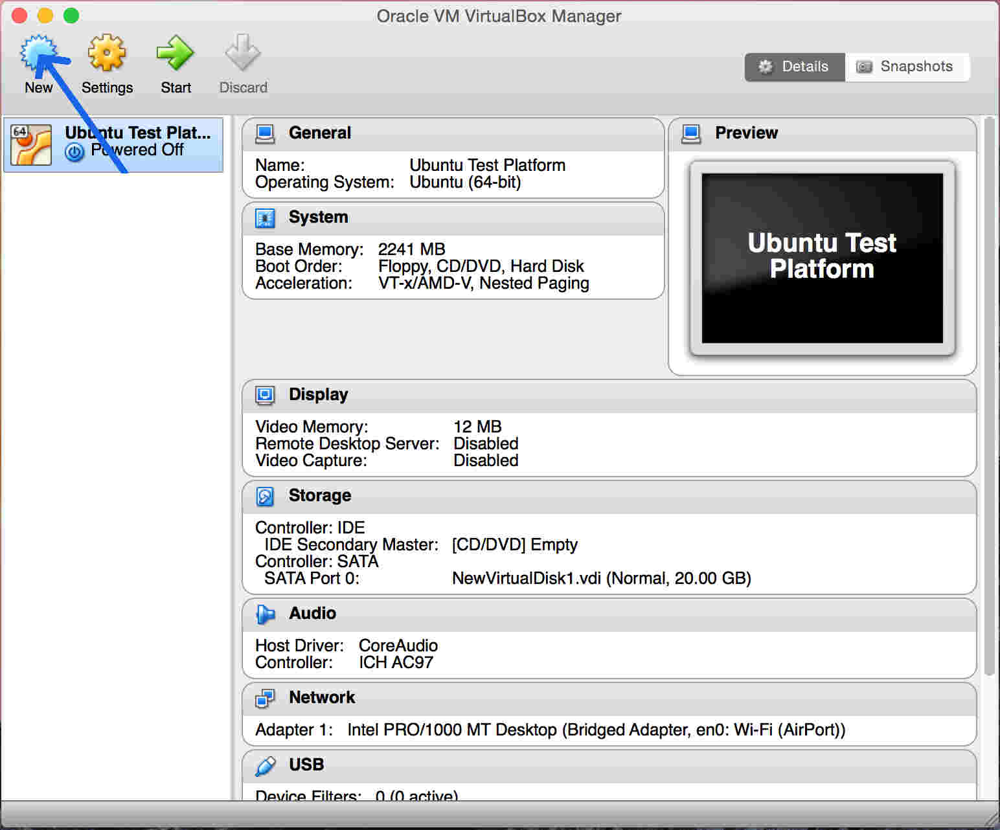 |
Now you're going to be asked what opperating system to use for the new virtual machine. You will also need to name your machine in this step to differentiate it from your other virtual machines. In this set of the notes I'm going to go over the creation of a Ubuntu desktop virtual machine and for the sake of the notes I'm going to name it test.
| 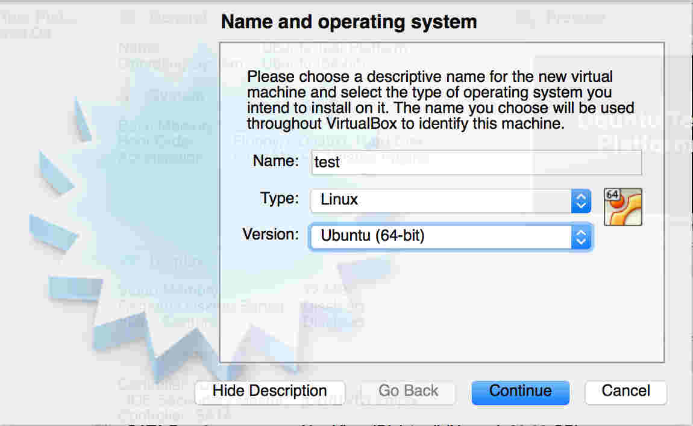 |
The next step will be to determine the amount of ram you want the virtual machine to be able to access. Of my 8 gb of ram I have decided to allow the vm to use 2 gb in case I still want to use the main operating system at the same time.
| 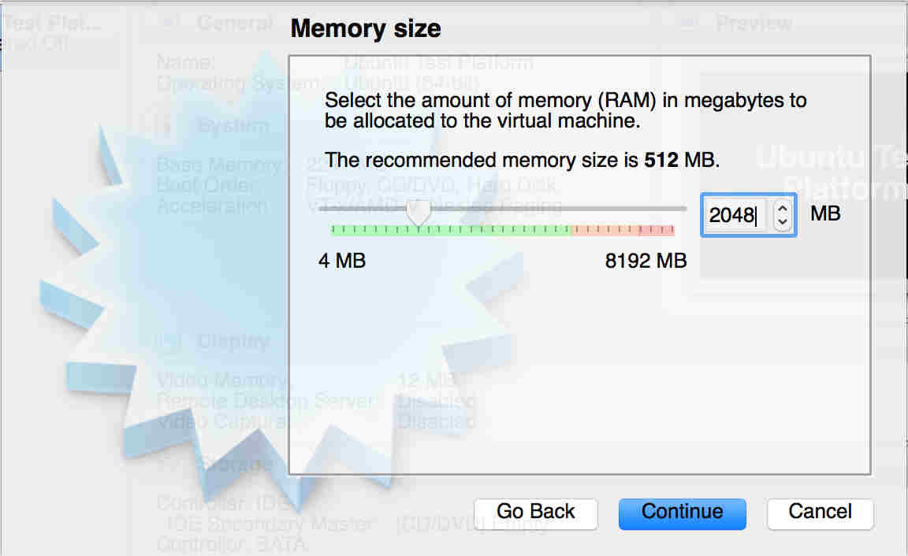 |
Virtualbox will then ask if we want to create a new virtual disk or use an existing one. Most often a new disk will be made the only exception being if trying to used the same virtual machine on different computers and you want the same harddrive to be used.
| 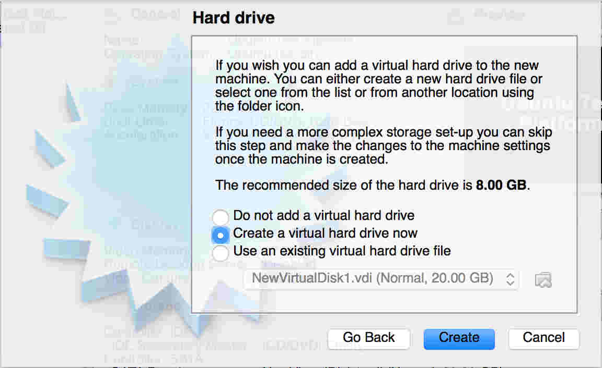 |
The filetype for the disk needs to be determined next. Since I don't use vmware or any other virtual machine software, I'm just going to leave the file type as vdi.
| 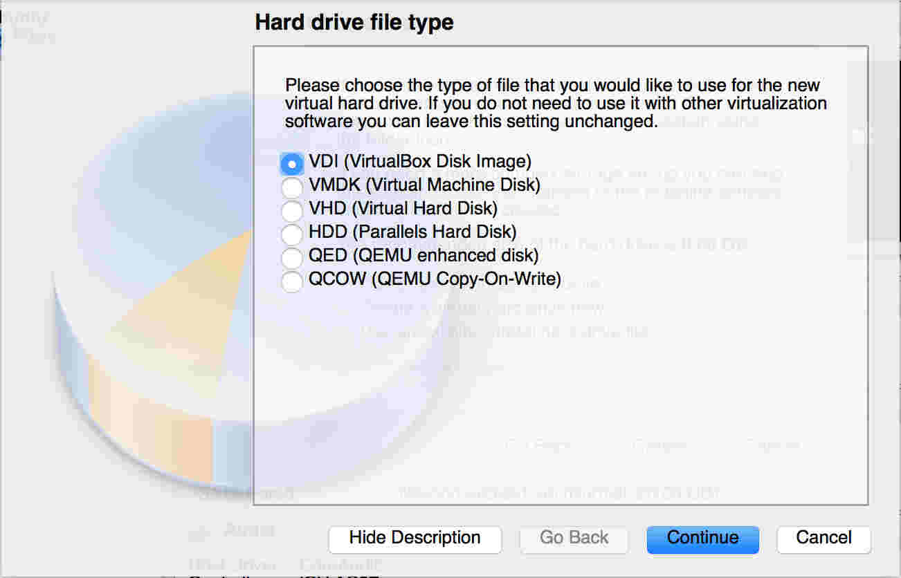 |
Virtualbox now needs to know if you want the new virtualdisk to expand as needed or if you want to leave it at a fixed value. I chose dynamically sized as I've had trouble with fixed size in the past and dynamically sized ones are easier to expand later if necessary.
| 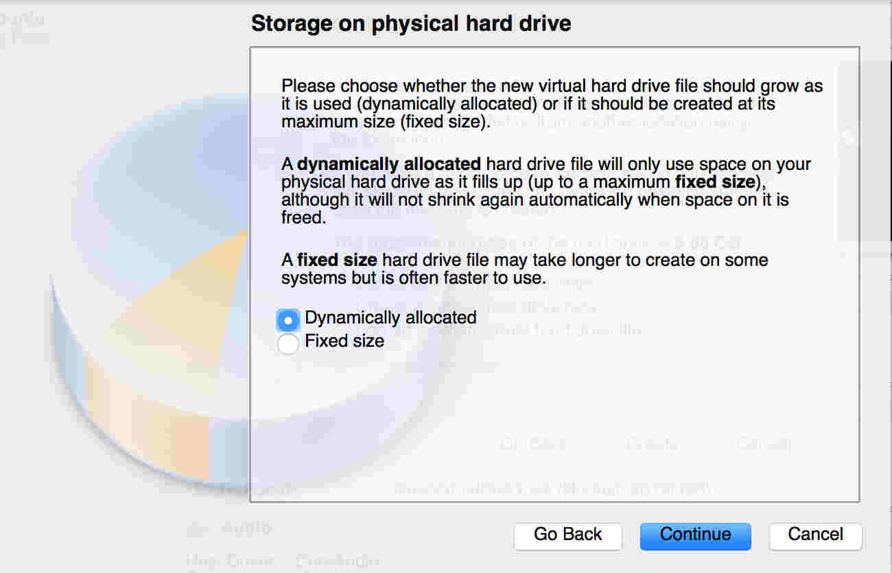 |
Now the size and location of the virtualdisk is decided. I have marked the button for relocating the new virtualdisk. Also I changed the harddrive size to 10 gb.
| 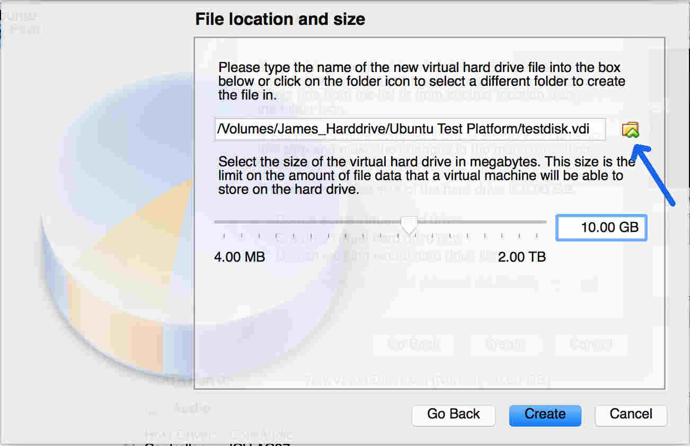 |
The virtual machine should now be made and you're ready to run the install of the operating system.
Additional Options
Use a different ip address
Access USB ports
Install Ubuntu
To begin the install of Ubuntu on the new virtual machine, start up the new virtual machine.
| 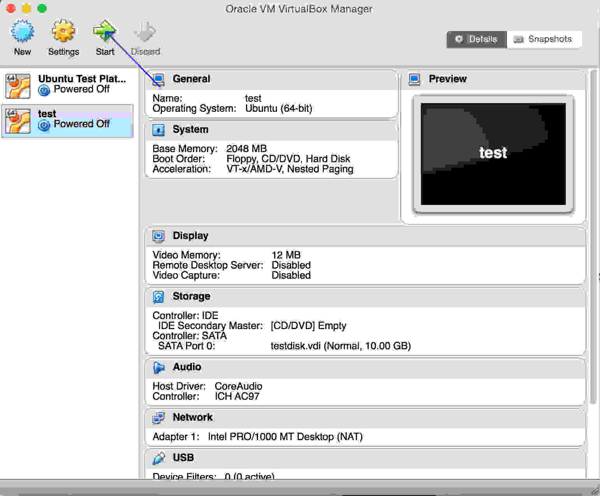 |
The next step is to click the icon to browse your files for the Ubuntu desktop iso file. This will allow the virtual machine to boot up using Ubuntu. Once you've selected the iso file click start.
| 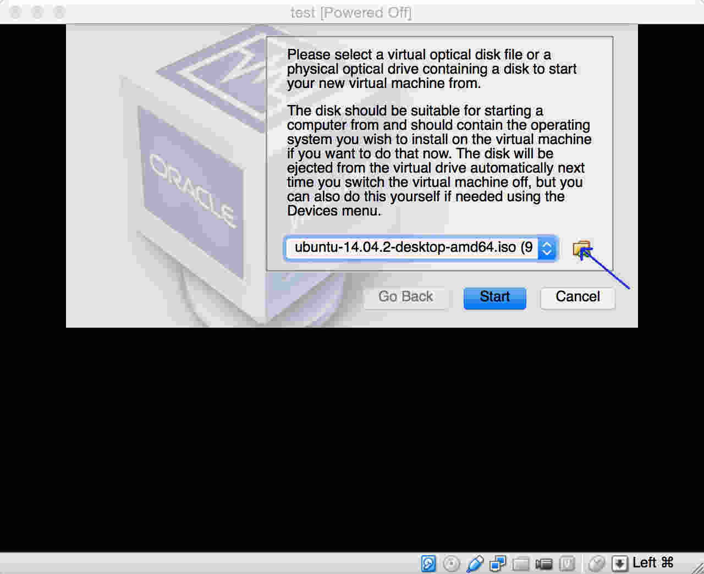 |
Now comes the time to actaully install Ubuntu on the new virtaul machine. We'll be selecting install ubuntu instead of try Ubuntu.
|
|
I'm going to make it go ahead and download updates while installing to possibly save time later. Other than that go ahead and click continue.
| 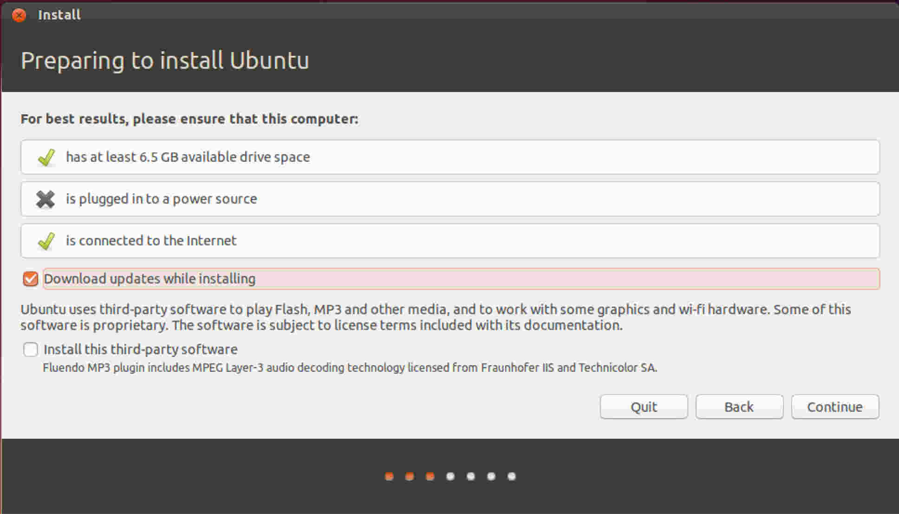 |
Now we're going to go ahead and install ubuntu. Don't worry about it's warning about erasing the disk because it will be contained with the newly created virtual harddrive which has nothing on it yet anyways.
| 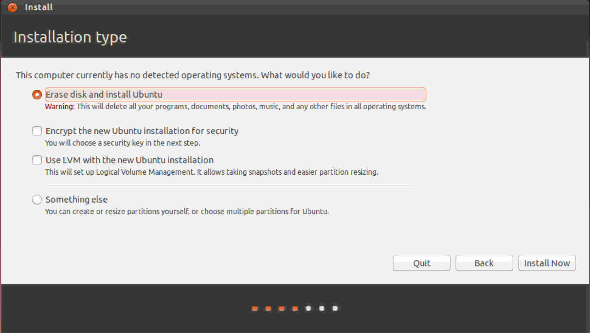 |
Simply click continue and let the install begin.
| 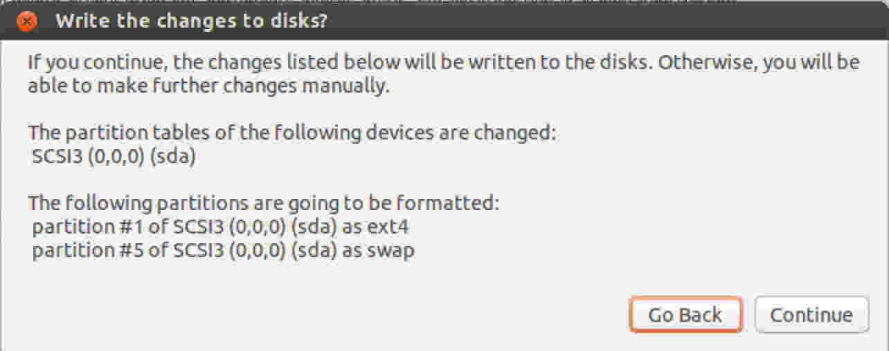 |
This step is self explanitory. Go ahead and select your time zone and then continue on.
| 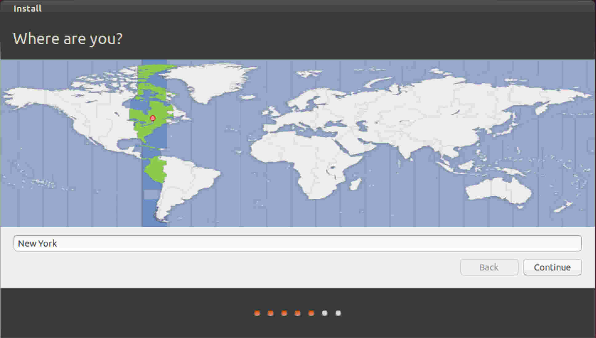 |
Select the keyboard language setup for your use. Being in the US I don't have to change the defaults and can simply continue on to the next step.
| 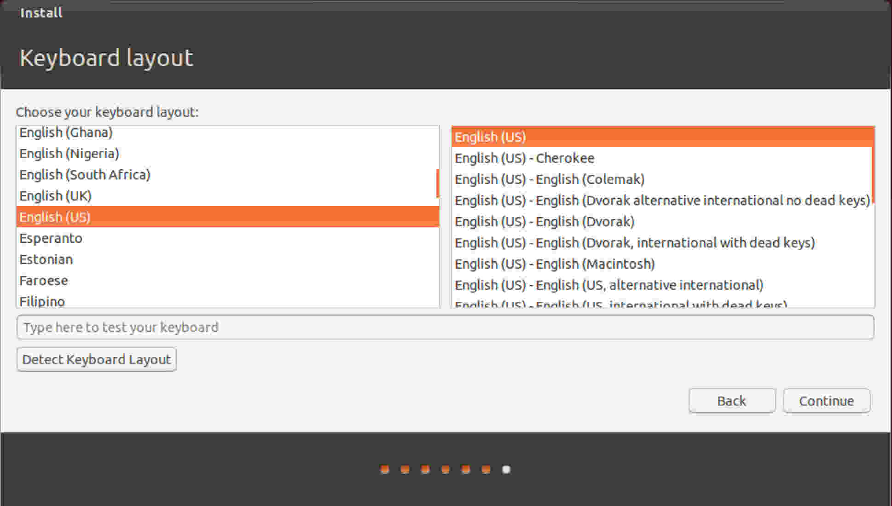 |
The last step will be to set up the user account you will be using for the Ubuntu system. Putting in your name will automatically fill in the next two text boxes. Set your password and decided whether or not you want your system to automatically log in when started or if you want it to prompt you for your password. After hitting continue the install should begin.
| 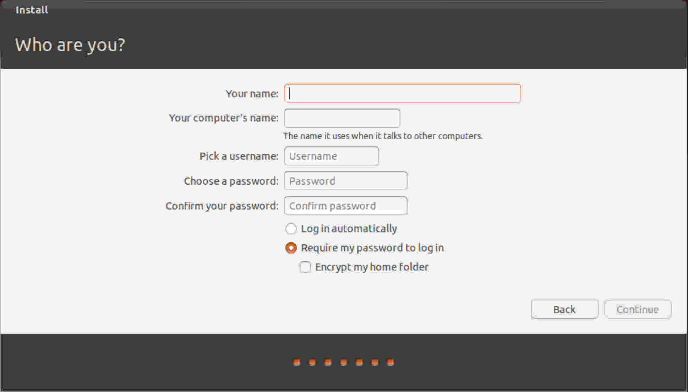 |
Fullscreen
Setting up vim
Setting up Python
pip
virtualenv
kivy
Cython
Pygame
Other Important Libraries
Git